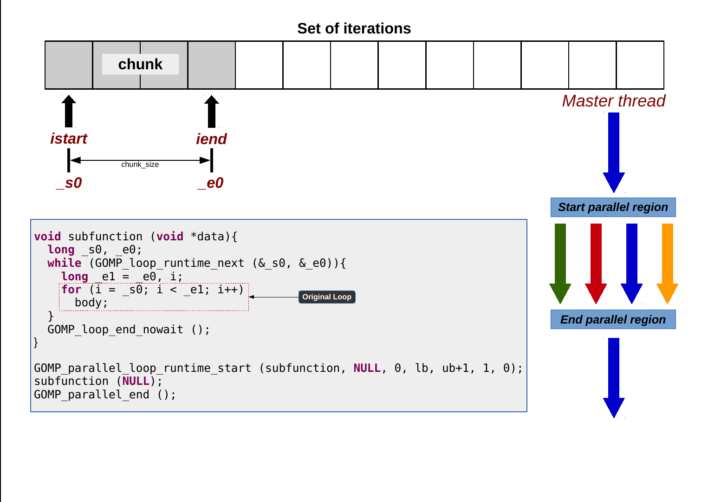
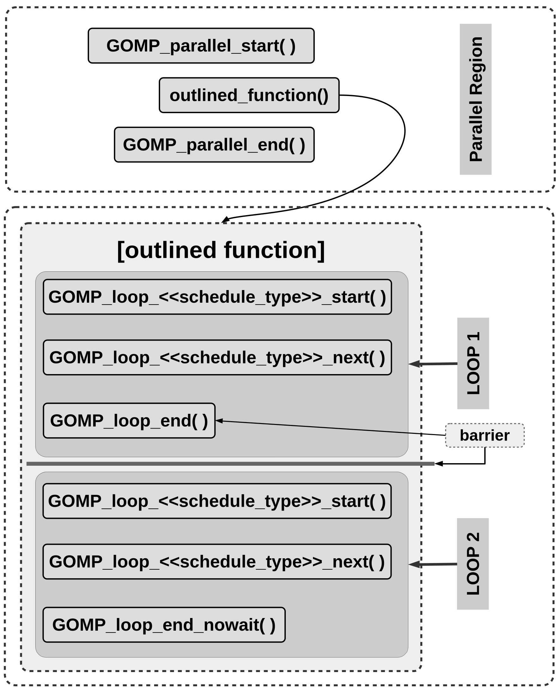
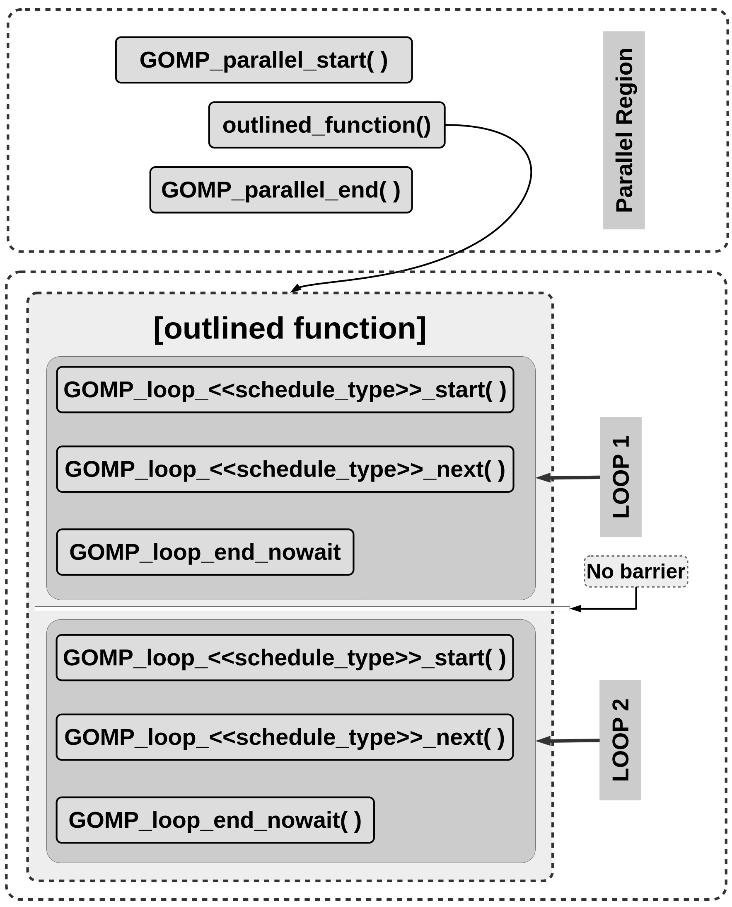
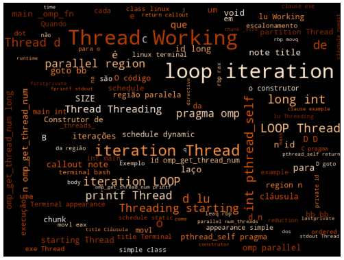

6 Diretivas de Compilação para Laços
Resumo: Laços são em muitos casos os trechos de código que dominam o tempo de execução. A diretiva de compilação com o construtor
foré uma das mais importantes, pois fornece mecanismos para que um laço de repetição com um domínio de iteração com interações que podem ser executadas em paralelo, possa ser distribuído para um time de tarefas, acelerando assim a execução desse laço. O objetivo é testar os efeitos da utilização da diretiva de distribuição de partições do conjunto de iterações para as tarefas de uma região paralela e verificar os efeitos causados com a aplicação das cláusulas. Na prática, o objetivo é executar o exemplo de soma de vetores com o construtor de laços e a cláusulaschedule.
6.1 Introdução
Quando uma região paralela é alcançada durante a execução, um time de threads é criado para executar a função extraída da região demarcada pelos construtores de região paralela (outlined function). Cópias do código da outlined function serão executadas pelas threads criadas para o time da região paralela. Se o código imprime uma mensagem ou é um laço de repetição veremos na tela várias mensagens ou teremos perceberemos que o laço foi executado várias vezes. Esta região tem dentro um laço de repetição, o trabalho não é dividido entre as threads automaticamente. Assim, é entendemos que coordenar a execução paralela criando o time de threads é importante, mas também é necessário compartilhar o trabalho entre as threads para que o programa seja executado de forma eficiente. O construtor de compartilhamento de trabalho para laços fornece mecanismos para que um laço de repetição com um domínio de iteração com interações que podem ser executadas em paralelo, possa ser distribuído para um time de tarefas, acelerando assim a execução desse laço.
6.2 Objetivos
- Explorar o Construtor de Compartilhamento de Trabalho para Laços1.
- Testar os efeitos das cláusulas admitidas por esses construtores.
6.3 Distribuindo as iterações de um laço: construtor for
O construtor for especifica que as iterações de um ou mais laços irão ser executadas em paralelo pelas threads do time criado pela região paralela, no contexto de suas tarefas implícitas. As iterações do laço são distribuídas entre as threads que estão em execução dentro da região paralela.
Mais detalhes podem ser vistos no documento de especificação OpenMP 4.5: 2.7.1 Loop Construct
#pragma omp for [clause[ [ , ] clause] ... ] new-line
for-loopQuando o Compilador (preprocessador) encontra o construtor for, é gerado um formato de código expandido conforme o tipo de escalonamento que será feito com as suas iterações.
Note que o construtor for deve estar dentro de uma região paralela. O trabalho, a execução do conjunto de iterações do laço, será distribuído entre as threads do time criado para a execução da região paralela.
#pragma omp parallel
{
#pragma omp for
for (i = lb; i <= ub; i++){
body;
}
}Já vimos que, para cada construtor parallel é criada uma nova função (outlined function) com o código do bloco de código relacionado.
O bloco de código neste caso é um construtor for, assim o corpo da função extraída para a região paralela terá código em um formato específico para a distribuição e execução das iterações do laço de repetição.
Todos os exemplos de código podem ser compilados utilizando o make e um Makefile já definido.
[for-directive]$ make
gcc -fopenmp -fdump-tree-ompexp example-for-directive.c -o example-for-directive.exe
gcc -fopenmp -fdump-tree-ompexp-graph example-for-directive.c
gcc -fopenmp example-for-directive.c -fno-asynchronous-unwind-tables -S -o example-for-directive.s
../scripts/gen-png.sh
Processing: example-for-directive.c.015t.ompexp.dot
New Name: example-for-directive-c-015t-ompexp-dot
../scripts/gen-pdf.sh
Processing: example-for-directive.c.015t.ompexp.dot
New Name: example-for-directive-c-015t-ompexp-dot
Ver os arquivos .omplower e .ompexp
[for-directive]$Exemplos do uso do construtor for:
#define SIZE 16
int main() {
int A[SIZE], i;
printf("Thread[%d][%lu]: Before parallel for.\n", omp_get_thread_num(), (long int)pthread_self());
#pragma omp parallel for
for(i = 0; i < SIZE; i++){
A[i] = i * i;
printf("Thread[%d][%lu]: Working in %lu loop iteration %d * %d = %d.\n", omp_get_thread_num(), (long int)pthread_self(), i, i, i, A[i]);
}
printf("Thread[%d][%lu]: After parallel for.\n", omp_get_thread_num(), (long int)pthread_self());
return 0;
}[exe-003]$ ./vetquad-omp-03
Thread[0][1890323776]: Before parallel region.
Thread[4][1865139776]: Working in 8 loop iteration 8 * 8 = 64.
Thread[7][1839961664]: Working in 14 loop iteration 14 * 14 = 196.
Thread[7][1839961664]: Working in 15 loop iteration 15 * 15 = 225.
Thread[6][1848354368]: Working in 12 loop iteration 12 * 12 = 144.
Thread[6][1848354368]: Working in 13 loop iteration 13 * 13 = 169.
Thread[5][1856747072]: Working in 10 loop iteration 10 * 10 = 100.
Thread[5][1856747072]: Working in 11 loop iteration 11 * 11 = 121.
Thread[4][1865139776]: Working in 9 loop iteration 9 * 9 = 81.
Thread[2][1881925184]: Working in 4 loop iteration 4 * 4 = 16.
Thread[2][1881925184]: Working in 5 loop iteration 5 * 5 = 25.
Thread[1][1890317888]: Working in 2 loop iteration 2 * 2 = 4.
Thread[1][1890317888]: Working in 3 loop iteration 3 * 3 = 9.
Thread[3][1873532480]: Working in 6 loop iteration 6 * 6 = 36.
Thread[3][1873532480]: Working in 7 loop iteration 7 * 7 = 49.
Thread[0][1890323776]: Working in 0 loop iteration 0 * 0 = 0.
Thread[0][1890323776]: Working in 1 loop iteration 1 * 1 = 1.
Thread[0][1890323776]: After parallel region.
[exe-003]$Outro exemplo de uso de for.
/* Codigo suprimido. */
int main() {
int id, i;
printf("Thread[%d][%lu]: Before parallel region.\n", omp_get_thread_num(), (long int) pthread_self());
#pragma omp parallel num_threads(4) default(none) private(id)
{
// All threads executes this code.
id = omp_get_thread_num();
#pragma omp for
for(i=0; i<16; i++){
printf("Thread[%d][%lu]: Working in %lu loop iteration.\n", id, (long int) pthread_self(), i);
}
}
printf("Thread[%d][%lu]: After parallel region.\n", omp_get_thread_num(), (long int) pthread_self());
return 0;
}src/for-directive$ ./example-for-directive.exe
Thread[0][2077312896]: Before parallel region.
Thread[0][2077312896]: Working in 0 loop iteration.
Thread[0][2077312896]: Working in 1 loop iteration.
Thread[0][2077312896]: Working in 2 loop iteration.
Thread[0][2077312896]: Working in 3 loop iteration.
Thread[1][2066994944]: Working in 4 loop iteration.
Thread[1][2066994944]: Working in 5 loop iteration.
Thread[2][2058602240]: Working in 8 loop iteration.
Thread[2][2058602240]: Working in 9 loop iteration.
Thread[2][2058602240]: Working in 10 loop iteration.
Thread[2][2058602240]: Working in 11 loop iteration.
Thread[1][2066994944]: Working in 6 loop iteration.
Thread[1][2066994944]: Working in 7 loop iteration.
Thread[3][2050209536]: Working in 12 loop iteration.
Thread[3][2050209536]: Working in 13 loop iteration.
Thread[3][2050209536]: Working in 14 loop iteration.
Thread[3][2050209536]: Working in 15 loop iteration.
Thread[0][2077312896]: After parallel region.
src/for-directive$ 6.4 Construtores combinados
O Código com uma região paralela com um laço é equivalente ao que apresenta os construtores em modo combinado.
#pragma omp parallel
{
#pragma omp for
for (i = lb; i <= ub; i++){
body;
}
}#pragma omp parallel for
for (i = lb; i <= ub; i++){
body;
}6.5 Loops: Construtor for
for
#pragma omp parallel for num_threads (number_of_threads) \
schedule ({auto, static, dynamic, guided, runtime}, {variable/expression \
| numerical value/constant})Semelhante ao processamento do construtor parallel, a diretiva parallel for também é implementada com a criação de uma nova função (outlined function) com o código do loop. Quando não se especifica um escalonamento o código é equivalente ao gerado para schedule(static). A libgomp utiliza as funções para delimitar a região paralela e na construção do formato do loop, com escalonamento estático:
void GOMP_parallel_loop_static(void (*)(void *), void *,unsigned, long, long, long, long, unsigned)
bool GOMP_loop_static_next(long *, long *)
void GOMP_loop_end_nowait(void)
void GOMP_parallel_end(void)O código expandido que substitui a declaração do loop paralelo é composto de uma função outlined e de chamadas para criar a região paralela. O loop original está nas linhas 5 a 7.
void subfunction (void *data) {
long _s0, _e0;
while (GOMP_loop_static_next (&_s0, &_e0)){
long _e1 = _e0, i;
for (i = _s0; i < _e1; i++){
body;
}
}
GOMP_loop_end_nowait ();
}
GOMP_parallel_loop_static (subfunction, NULL, 0, lb, ub+1, 1, 0);
subfunction (NULL);
GOMP_parallel_end ();Os códigos diferem apenas na definição do limite superior dos laços.
#pragma omp parallel for schedule(static)
for (i = 0; i < 1024; i++){
// body.
}n = 1024;
#pragma omp parallel for schedule(static)
for (i = 0; i < n; i++){
// body.
}O código em GIMPLE, que é a representação intermediária do GCC:
main () {
<bb 2>:
__builtin_GOMP_parallel_start (main._omp_fn.0, 0B, 0);
main._omp_fn.0 (0B);
__builtin_GOMP_parallel_end ();
return;
}
main._omp_fn.0(void* .omp_data_i){
<bb 11>:
<bb 3>:
D.1816 = __builtin_omp_get_num_threads();
D.1817 = __builtin_omp_get_thread_num();
q.1 = 1024 / D.1816;
tt.2 = 1024 % D.1816;
if (D.1817 < tt.2)
goto <bb 9>;
else
goto <bb 10>;
<bb 10>:
D.1820 = q.1 * D.1817;
D.1821 = D.1820 + tt.2;
D.1822 = D.1821 + q.1;
if (D.1821 >= D.1822)
goto <bb 5>;
else
goto <bb 8>;
<bb 8>:
i = D.1821;
<bb 4>:
i = i + 1;
if (i < D.1822)
goto <bb 4>;
else
goto <bb 5>;
<bb 5>:
<bb 6>:
return;
<bb 9>:
tt.2 = 0;
q.1 = q.1 + 1;
goto <bb 10>;
}O código em assembly:
.file "for-schedule-static-upper-bound-value.c"
.text
.globl main
.type main, @function
main:
pushq %rbp
movq %rsp, %rbp
movl $0, %edx
movl $0, %esi
movl $main._omp_fn.0, %edi
call GOMP_parallel_start
movl $0, %edi
call main._omp_fn.0
call GOMP_parallel_end
popq %rbp
ret
.size main, .-main
.type main._omp_fn.0, @function
main._omp_fn.0:
pushq %rbp
movq %rsp, %rbp
pushq %rbx
subq $40, %rsp
movq %rdi, -40(%rbp)
call omp_get_num_threads
movl %eax, %ebx
call omp_get_thread_num
movl %eax, %esi
movl $1024, %eax
cltd
idivl %ebx
movl %eax, %ecx
movl $1024, %eax
cltd
idivl %ebx
movl %edx, %eax
cmpl %eax, %esi
jl .L3
.L6:
imull %ecx, %esi
movl %esi, %edx
addl %edx, %eax
leal (%rax,%rcx), %edx
cmpl %edx, %eax
jge .L2
movl %eax, -20(%rbp)
.L5:
addl $1, -20(%rbp)
cmpl %edx, -20(%rbp)
jl .L5
jmp .L2
.L3:
movl $0, %eax
addl $1, %ecx
jmp .L6
.L2:
addq $40, %rsp
popq %rbx
popq %rbp
ret
.size main._omp_fn.0, .-main._omp_fn.0
.ident "GCC: (Debian 4.8.4-1) 4.8.4"
.section .note.GNU-stack,"",@progbits 6.6 Formatos do Código Expandido identificados
O GCC + a libgomp usam algumas funções para criar os formatos de código dos laços. Existem pelo menos dois formatos que são gerados conforme as definições de variáveis como chunk_size e o limite superior do laço.
6.7 Loops: Construtor for – Primeiro formato
Para laços que utilizam escalonamentos dos tipos dynamic, runtime e guided – <<schedule_type>>:
#pragma omp parallel for schedule(dynamic|runtime|guided)
for (i = 0; i < 1024; i++) {
body;
}A libgomp usa as funções para delimitar a região paralela de código e criar o primeiro formato do loop:
void GOMP_parallel_loop_<<schedule_type>>_start (void (*fn) (void *),
void *data, unsigned num_threads, long start, long end, long incr);
void GOMP_parallel_end (void);
bool GOMP_loop_<<schedule_type>>_next(long *istart, long *iend);
void GOMP_loop_end_nowait (void);O código expandido para o primeiro formato:
void subfunction (void *data){
long _s0, _e0;
while (GOMP_loop_<<schedule_type>>_next (&_s0, &_e0)){
long _e1 = _e0, i;
for (i = _s0; i < _e1; i++){
body;
}
}
GOMP_loop_end_nowait ();
}
GOMP_parallel_loop_<<schedule_type>>_start (subfunction, NULL, 0, lb, ub+1, 1, 0);
subfunction (NULL);
GOMP_parallel_end ();Execução de Chunks pelas Threads

O código GIMPLE para o primeiro formato:
main () {
<bb 2>:
__builtin_GOMP_parallel_loop_dynamic_start (main._omp_fn.0, 0B, 0, 0, 1024, 1, 1);
main._omp_fn.0 (0B);
__builtin_GOMP_parallel_end ();
return;
}
main._omp_fn.0 (void * .omp_data_i) {
<bb 10>:
<bb 3>:
D.1818 = __builtin_GOMP_loop_dynamic_next (&.istart0.1, &.iend0.2);
if (D.1818 != 0)
goto <bb 8>;
else
goto <bb 5>;
<bb 8>:
.istart0.3 = .istart0.1;
i = (int) .istart0.3;
.iend0.4 = .iend0.2;
D.1822 = (int) .iend0.4;
<bb 4>:
i = i + 1;
if (i < D.1822)
goto <bb 4>;
else
goto <bb 9>;
<bb 9>:
D.1823 = __builtin_GOMP_loop_dynamic_next (&.istart0.1, &.iend0.2);
if (D.1823 != 0)
goto <bb 8>;
else
goto <bb 5>;
<bb 5>:
__builtin_GOMP_loop_end_nowait ();
<bb 6>:
return;
} O código em assembly para o primeiro formato:
.file "for-schedule-dynamic-upper-bound-value.c"
.text
.globl main
.type main, @function
main:
pushq %rbp
movq %rsp, %rbp
subq $32, %rsp
movq $1, (%rsp)
movl $1, %r9d
movl $1024, %r8d
movl $0, %ecx
movl $0, %edx
movl $0, %esi
movl $main._omp_fn.0, %edi
call GOMP_parallel_loop_dynamic_start
movl $0, %edi
call main._omp_fn.0
call GOMP_parallel_end
leave
ret
.size main, .-main
.type main._omp_fn.0, @function
main._omp_fn.0:
pushq %rbp
movq %rsp, %rbp
subq $48, %rsp
movq %rdi, -40(%rbp)
leaq -16(%rbp), %rdx
leaq -24(%rbp), %rax
movq %rdx, %rsi
movq %rax, %rdi
call GOMP_loop_dynamic_next
testb %al, %al
je .L3
.L5:
movq -24(%rbp), %rax
movl %eax, -4(%rbp)
movq -16(%rbp), %rax
.L4:
addl $1, -4(%rbp)
cmpl %eax, -4(%rbp)
jl .L4
leaq -16(%rbp), %rdx
leaq -24(%rbp), %rax
movq %rdx, %rsi
movq %rax, %rdi
call GOMP_loop_dynamic_next
testb %al, %al
jne .L5
.L3:
call GOMP_loop_end_nowait
leave
ret
.size main._omp_fn.0, .-main._omp_fn.0
.ident "GCC: (Debian 4.8.4-1) 4.8.4"
.section .note.GNU-stack,"",@progbits6.8 Loops: Construtor for
6.9 Loops: Construtor for – Segundo formato
Para laços que utilizam escalonamentos dos tipos dynamic, runtime e guided – <<schedule_type>>:
n = 1024;
#pragma omp parallel for schedule(dynamic|runtime|guided)
for (i = 0; i < n; i++) {
body;
}A libgomp usa as funções para delimitar a região paralela de código e criar o segundo formato do loop:
[alertblock]{ABI libgomp – funções usadas no segundo formato da parallel for}
void GOMP_parallel_start (void (*fn) (void *), void *data, unsigned num_threads);
void GOMP_parallel_end (void);
bool GOMP_loop_<<schedule_type>>_start (long start, long end, long incr,
long *istart, long *iend);
bool GOMP_loop_<<schedule_type>>_next(long *istart, long *iend);
void GOMP_loop_end_nowait (void);O código expandido para o segundo formato:
void subfunction (void *data){
long i, _s0, _e0;
if (GOMP_loop_<<schedule_type>>_start (0, n, 1, &_s0, &_e0)){
do {
long _e1 = _e0;
for (i = _s0; i < _e0; i++) {
body;
}
} while (GOMP_loop_<<schedule_type>>_next (&_s0, &_e0));
}
GOMP_loop_end_nowait ();
}
/* The annoted loop is replaced. */
GOMP_parallel_start (subfunction, &data, 0);
subfunction (NULL);
GOMP_parallel_end ();O código GIMPLE para o segundo formato, schedule(dynamic):
main () {
struct .omp_data_s.0 .omp_data_o.1;
<bb 2>:
n = 1024;
.omp_data_o.1.n = n;
__builtin_GOMP_parallel_start (main._omp_fn.0, &.omp_data_o.1, 0);
main._omp_fn.0 (&.omp_data_o.1);
__builtin_GOMP_parallel_end ();
n = .omp_data_o.1.n;
return;
}
main._omp_fn.0 (struct .omp_data_s.0 * .omp_data_i) {
<bb 10>:
<bb 3>:
D.1822 = .omp_data_i->n;
D.1823 = (long int) D.1822;
D.1826 = __builtin_GOMP_loop_dynamic_start (0, D.1823, 1, 1, &.istart0.2, &.iend0.3);
if (D.1826 != 0)
goto <bb 8>;
else
goto <bb 5>;
<bb 8>:
.istart0.4 = .istart0.2;
i = (int) .istart0.4;
.iend0.5 = .iend0.3;
D.1830 = (int) .iend0.5;
<bb 4>:
i = i + 1;
if (i < D.1830)
goto <bb 4>;
else
goto <bb 9>;
<bb 9>:
D.1831 = __builtin_GOMP_loop_dynamic_next (&.istart0.2, &.iend0.3);
if (D.1831 != 0)
goto <bb 8>;
else
goto <bb 5>;
<bb 5>:
__builtin_GOMP_loop_end_nowait ();
<bb 6>:
return;
}O código em assembly para o segundo formato, schedule(dynamic):
.file "for-schedule-dynamic-upper-bound-variable.c"
.text
.globl main
.type main, @function
main:
pushq %rbp
movq %rsp, %rbp
subq $32, %rsp
movl $1024, -4(%rbp)
movl -4(%rbp), %eax
movl %eax, -32(%rbp)
leaq -32(%rbp), %rax
movl $0, %edx
movq %rax, %rsi
movl $main._omp_fn.0, %edi
call GOMP_parallel_start
leaq -32(%rbp), %rax
movq %rax, %rdi
call main._omp_fn.0
call GOMP_parallel_end
movl -32(%rbp), %eax
movl %eax, -4(%rbp)
leave
ret
.size main, .-main
.type main._omp_fn.0, @function
main._omp_fn.0:
pushq %rbp
movq %rsp, %rbp
subq $48, %rsp
movq %rdi, -40(%rbp)
movq -40(%rbp), %rax
movl (%rax), %eax
cltq
leaq -16(%rbp), %rcx
leaq -24(%rbp), %rdx
movq %rcx, %r9
movq %rdx, %r8
movl $1, %ecx
movl $1, %edx
movq %rax, %rsi
movl $0, %edi
call GOMP_loop_dynamic_start
testb %al, %al
je .L3
.L5:
movq -24(%rbp), %rax
movl %eax, -4(%rbp)
movq -16(%rbp), %rax
.L4:
addl $1, -4(%rbp)
cmpl %eax, -4(%rbp)
jl .L4
leaq -16(%rbp), %rdx
leaq -24(%rbp), %rax
movq %rdx, %rsi
movq %rax, %rdi
call GOMP_loop_dynamic_next
testb %al, %al
jne .L5
.L3:
call GOMP_loop_end_nowait
leave
ret
.size main._omp_fn.0, .-main._omp_fn.0
.ident "GCC: (Debian 4.8.4-1) 4.8.4"
.section .note.GNU-stack,"",@progbits 6.10 Loops: Construtor for
6.11 VectorAdd com a diretiva for
/* Codigo suprimido. */
int main(int argc, char *argv[]) {
int i, num_elements, num_threads = 0;
long id, ii, ff;
if(argc < 4){
fprintf(stderr, "Uso: %s <num_elements> <num_threads> <partition_size>\n", argv[0]);
exit(0);
}
num_elements = atoi(argv[1]);
num_threads = atoi(argv[2]);
partition = atoi(argv[3]);
fprintf(stdout, "Thread[%lu]: num_elements: %d num_threads: %d.\n", (long int) pthread_self(),
num_elements, num_threads);
fprintf(stdout, "Thread[%lu]: Allocating the arrays.\n", (long int) pthread_self());
h_a = (float *) malloc(num_elements * sizeof(float));
h_b = (float *) malloc(num_elements * sizeof(float));
h_c = (float *) malloc(num_elements * sizeof(float));
init_array(num_elements);
fprintf(stdout, "Thread[%lu]: Before parallel region.\n", (long int) pthread_self());
#pragma omp parallel num_threads(num_threads) default(none) private(i, id)
shared(stdout, num_elements, partition, h_a, h_b, h_c)
{
id = omp_get_thread_num();
#pragma omp for schedule(dynamic, partition)
for (i = 0; i < num_elements; i++) {
fprintf(stdout, " Thread[%lu,%lu]: Working on partition.\n", id, (long int) pthread_self());
h_c[i] = h_a[i] + h_b[i];
}
fprintf(stdout, "Thread[%lu]: Exiting.\n", (long int) pthread_self());
}
fprintf(stdout, "Thread[%lu]: All threads were finished.\n", (long int) pthread_self());
fprintf(stdout, "Thread[%lu]: Printing the result.\n", (long int) pthread_self());
fprintf(stdout, "Thread[%lu]: Checking the result.\n", (long int) pthread_self());
check_result(num_elements);
fprintf(stdout, "Thread[%lu]: Fui, Tchau!\n", (long int) pthread_self());
return 0;
}Código GIMPLE gerado:
main () {
/* Supressed Code */
<bb 2>:
D.2771 = pthread_self ();
D.2772 = (long int) D.2771;
D.2773 = omp_get_thread_num ();
printf ("Thread[%d][%lu]: Before parallel region.\n", D.2773, D.2772);
__builtin_GOMP_parallel_start (main._omp_fn.0, 0B, 4);
main._omp_fn.0 (0B);
__builtin_GOMP_parallel_end ();
D.2776 = pthread_self ();
D.2777 = (long int) D.2776;
D.2778 = omp_get_thread_num ();
printf ("Thread[%d][%lu]: After parallel region.\n", D.2778, D.2777);
D.2779 = 0;
<L0>:
return D.2779;
}
main._omp_fn.0 (void * .omp_data_i){
int id;
<bb 12>:
<bb 3>:
id = omp_get_thread_num ();
D.2795 = __builtin_omp_get_num_threads ();
D.2796 = __builtin_omp_get_thread_num ();
q.1 = 16 / D.2795;
tt.2 = 16 % D.2795;
if (D.2796 < tt.2)
goto <bb 10>;
else
goto <bb 11>;
<bb 11>:
D.2799 = q.1 * D.2796;
D.2800 = D.2799 + tt.2;
D.2801 = D.2800 + q.1;
if (D.2800 >= D.2801)
goto <bb 5>;
else
goto <bb 9>;
<bb 9>:
i = D.2800;
<bb 4>:
D.2803 = pthread_self ();
D.2804 = (long int) D.2803;
printf ("Thread[%d][%lu]: Working in %lu loop iteration.\n", id, D.2804, i);
i = i + 1;
if (i < D.2801)
goto <bb 4>;
else
goto <bb 5>;
<bb 5>:
<bb 6>:
return;
<bb 10>:
tt.2 = 0;
q.1 = q.1 + 1;
goto <bb 11>;
}src/vectoradd-omp-for-directive$ ./vectoradd-omp-for.exe 16 2 2
Thread[1988261760]: num_elements: 16 num_threads: 2.
Thread[1988261760]: Allocating the arrays.
Thread[1988261760]: Initializing the arrays.
Thread[1988261760]: Before parallel region.
Thread[0,1988261760]: Working on partition.
Thread[0,1988261760]: Working on partition.
Thread[1,1977943808]: Working on partition.
Thread[1,1977943808]: Working on partition.
Thread[1,1977943808]: Working on partition.
Thread[1,1977943808]: Working on partition.
Thread[1,1977943808]: Working on partition.
Thread[1,1977943808]: Working on partition.
Thread[1,1977943808]: Working on partition.
Thread[1,1977943808]: Working on partition.
Thread[1,1977943808]: Working on partition.
Thread[1,1977943808]: Working on partition.
Thread[1,1977943808]: Working on partition.
Thread[1,1977943808]: Working on partition.
Thread[0,1988261760]: Working on partition.
Thread[0,1988261760]: Working on partition.
Thread[1977943808]: Exiting.
Thread[1988261760]: Exiting.
Thread[1988261760]: All threads were finished.
Thread[1988261760]: Printing the result.
Thread[1988261760]: Checking the result.
Thread[1988261760]: Checking.
Thread[1988261760]: Final Result: (16.000000, 1.000000).
Thread[1988261760]: Fui, Tchau!
src/vectoradd-omp-for-directive$7 Cláusulas para o Construtor for
7.1 Construtor for: cláusulas
private(list)
firstprivate(list)
lastprivate(list)
linear(list[: linear-step])
reduction(reduction-identifier: list)
schedule([modifier[, modifier]:]kind[, chunk_size])
collapse(n)
ordered[(n)]
nowait7.2 Construtor de loop for: cláusula private
A cláusula private indica quais variáveis serão privadas. As variáveis definidas como private têm seus valores indefinidos na entrada do construtor ao qual está associada.
No documento de especificação OpenMP 4.5: 2.15.3 Data-Sharing Attribute Clause
Exemplo [for-private-clause]:
int main() {
int id, i, a = 0;
printf("Thread[%d][%lu]: Before parallel region a: %d.\n", omp_get_thread_num(), (long int)pthread_self(), a);
#pragma omp parallel num_threads(4) private(id, a)
{
// All threads executes this code.
id = omp_get_thread_num();
a = 1;
printf("Thread[%d][%lu]: Threading starting with a: %d.\n", id, (long int)pthread_self(), a);
#pragma omp for private(a)
for (i = 0; i < 10; i++) {
a = 2;
printf("Thread[%d][%lu]: Working in %lu loop iteration a: %d\n", id, (long int)pthread_self(), i, a);
}
assert(a == 1);
printf("Thread[%d][%lu]: After the for loop a: %d.\n", id, (long int)pthread_self(), a);
}
printf("Thread[%d][%lu]: After parallel region a: %d.\n", omp_get_thread_num(), (long int)pthread_self(), a);
return 0;
}[for-private-clause]$ ./example-for-private-clause.exe
Thread[0][18446744073173108608]: Before parallel region a: 0
Thread[0][18446744073173108608]: Threading starting with a: 1
Thread[0][18446744073173108608]: Working in 0 loop iteration a: 2
Thread[0][18446744073173108608]: Working in 1 loop iteration a: 2
Thread[1][18446744073160603392]: Threading starting with a: 1
Thread[1][18446744073160603392]: Working in 2 loop iteration a: 2
Thread[1][18446744073160603392]: Working in 3 loop iteration a: 2
Thread[3][18446744073143817984]: Threading starting with a: 1
Thread[3][18446744073143817984]: Working in 6 loop iteration a: 2
Thread[3][18446744073143817984]: Working in 7 loop iteration a: 2
Thread[2][18446744073152210688]: Threading starting with a: 1
Thread[2][18446744073152210688]: Working in 4 loop iteration a: 2
Thread[2][18446744073152210688]: Working in 5 loop iteration a: 2
Thread[3][18446744073143817984]: After the for loop a: 1
Thread[2][18446744073152210688]: After the for loop a: 1
Thread[1][18446744073160603392]: After the for loop a: 1
Thread[0][18446744073173108608]: After the for loop a: 1
Thread[0][18446744073173108608]: After parallel region a: 0
[for-private-clause]$ 7.3 Construtor de loop for: cláusula firstprivate
Também indica quais variáveis serão privadas. As variáveis definidas como firstprivate entram na região paralela ou no laço com os valores que possuíam antes de encontrar o construtor ao qual à cláusula está associada.
No documento de especificação OpenMP 4.5: 2.15.3 Data-Sharing Attribute Clause
Exemplo [for-firstprivate-clause]:
int main() {
int id, i, a = 0;
printf("Thread[%d][%lu]: Before parallel region a: %d\n", omp_get_thread_num(), (long int)pthread_self(), a);
#pragma omp parallel num_threads(4) private(id)
{
// All threads executes this code.
id = omp_get_thread_num();
a = 1;
printf("Thread[%d][%lu]: Threading starting with a: %d\n", id, (long int)pthread_self(), a);
#pragma omp for firstprivate(a)
for (i = 0; i < 8; i++) {
printf("Thread[%d][%lu]: Working in %lu loop iteration a before: %d\n", id, (long int)pthread_self(), i, a);
a = 2;
printf("Thread[%d][%lu]: Working in %lu loop iteration a after: %d\n", id, (long int)pthread_self(), i, a);
}
assert(a == 1);
printf("Thread[%d][%lu]: After the for loop a: %d\n", id, (long int)pthread_self(), a);
}
printf("Thread[%d][%lu]: After parallel region a: %d\n", omp_get_thread_num(), (long int)pthread_self(), a);
return 0;
}[for-firstprivate-clause]$ ./example-for-firstprivate-clause.exe
Thread[0][18446744071635048320]: Before parallel region a: 0
Thread[0][18446744071635048320]: Threading starting with a: 1
Thread[0][18446744071635048320]: Working in 0 loop iteration a before: 1
Thread[0][18446744071635048320]: Working in 0 loop iteration a after: 2
Thread[0][18446744071635048320]: Working in 1 loop iteration a before: 2
Thread[0][18446744071635048320]: Working in 1 loop iteration a after: 2
Thread[1][18446744071622543104]: Threading starting with a: 1
Thread[1][18446744071622543104]: Working in 2 loop iteration a before: 1
Thread[1][18446744071622543104]: Working in 2 loop iteration a after: 2
Thread[1][18446744071622543104]: Working in 3 loop iteration a before: 2
Thread[1][18446744071622543104]: Working in 3 loop iteration a after: 2
Thread[2][18446744071614150400]: Threading starting with a: 1
Thread[2][18446744071614150400]: Working in 4 loop iteration a before: 1
Thread[2][18446744071614150400]: Working in 4 loop iteration a after: 2
Thread[3][18446744071605757696]: Threading starting with a: 1
Thread[3][18446744071605757696]: Working in 6 loop iteration a before: 1
Thread[3][18446744071605757696]: Working in 6 loop iteration a after: 2
Thread[3][18446744071605757696]: Working in 7 loop iteration a before: 2
Thread[3][18446744071605757696]: Working in 7 loop iteration a after: 2
Thread[2][18446744071614150400]: Working in 5 loop iteration a before: 2
Thread[2][18446744071614150400]: Working in 5 loop iteration a after: 2
Thread[0][18446744071635048320]: After the for loop a: 1
Thread[3][18446744071605757696]: After the for loop a: 1
Thread[1][18446744071622543104]: After the for loop a: 1
Thread[2][18446744071614150400]: After the for loop a: 1
Thread[0][18446744071635048320]: After parallel region a: 1
[for-firstprivate-clause]$7.4 Construtor de loop for: cláusula lastprivate
A cláusula lastprivate também indica quais variáveis serão consideradas como privadas dentro da região definida pelo construtor. Além disso, essa cláusula permite que a variável saia da região definida pelo construtor com o último valor que foi atualizado para a mesma dentro da região.
Quando essa cláusula é utilizada em um construtor for, a variável é atualizada com o valor atribuído à variável na última iteração do laço.
Exemplo [for-lastprivate-clause]:
int main() {
int id, i, a = 0;
printf("Thread[%d][%lu]: Before parallel region a: %d\n", omp_get_thread_num(), (long int)pthread_self(), a);
#pragma omp parallel num_threads(4) private(id)
{
// All threads executes this code.
id = omp_get_thread_num();
a = 1;
printf("Thread[%d][%lu]: Threading starting with a: %d\n", id, (long int)pthread_self(), a);
#pragma omp for lastprivate(a)
for (i = 0; i < 8; i++) {
printf("Thread[%d][%lu]: Working in %lu loop iteration a before: %d\n", id, (long int)pthread_self(), i, a);
a = i;
printf("Thread[%d][%lu]: Working in %lu loop iteration a after: %d\n", id, (long int)pthread_self(), i, a);
}
assert(a == 7);
printf("Thread[%d][%lu]: After the for loop a: %d\n", id, (long int)pthread_self(), a);
}
printf("Thread[%d][%lu]: After parallel region a: %d\n", omp_get_thread_num(), (long int)pthread_self(), a);
return 0;
}[for-lastprivate-clause]$ ./example-for-lastprivate-clause.exe
Thread[0][18446744073597740928]: Before parallel region a: 0
Thread[0][18446744073597740928]: Threading starting with a: 1
Thread[0][18446744073597740928]: Working in 0 loop iteration a before: 2029357184
Thread[0][18446744073597740928]: Working in 0 loop iteration a after: 0
Thread[0][18446744073597740928]: Working in 1 loop iteration a before: 0
Thread[3][18446744073568450304]: Threading starting with a: 1
Thread[3][18446744073568450304]: Working in 6 loop iteration a before: 0
Thread[3][18446744073568450304]: Working in 6 loop iteration a after: 6
Thread[3][18446744073568450304]: Working in 7 loop iteration a before: 6
Thread[3][18446744073568450304]: Working in 7 loop iteration a after: 7
Thread[2][18446744073576843008]: Threading starting with a: 1
Thread[2][18446744073576843008]: Working in 4 loop iteration a before: 0
Thread[2][18446744073576843008]: Working in 4 loop iteration a after: 4
Thread[2][18446744073576843008]: Working in 5 loop iteration a before: 4
Thread[2][18446744073576843008]: Working in 5 loop iteration a after: 5
Thread[0][18446744073597740928]: Working in 1 loop iteration a after: 1
Thread[1][18446744073585235712]: Threading starting with a: 1
Thread[1][18446744073585235712]: Working in 2 loop iteration a before: 0
Thread[1][18446744073585235712]: Working in 2 loop iteration a after: 2
Thread[1][18446744073585235712]: Working in 3 loop iteration a before: 2
Thread[1][18446744073585235712]: Working in 3 loop iteration a after: 3
Thread[2][18446744073576843008]: After the for loop a: 7
Thread[0][18446744073597740928]: After the for loop a: 7
Thread[1][18446744073585235712]: After the for loop a: 7
Thread[3][18446744073568450304]: After the for loop a: 7
Thread[0][18446744073597740928]: After parallel region a: 7
[for-lastprivate-clause]$7.5 Construtor de loop for: cláusula reduction
A cláusula reduction especifica que uma ou mais variáveis que são privadas de cada thread serão submetidas a uma operação de redução no final da região definida pelo construtor. Cada thread tem uma cópia de cada variável da lista, como se fosse utilizada a cláusula private. Cada cópia é então inicializada com o valor de inicialização definido pelo operador e no final da região definida pelo construtor a lista de variáveis original é atualizada com os valores das cópias privadas usando o operador de redução.
Exemplo [for-reduction-clause]:
#define SIZE 16
int main() {
int A[SIZE], B[SIZE], i;
int id, dot = 0;
printf("Thread[%d][%lu]: Before parallel region.\n", omp_get_thread_num(), (long int)pthread_self());
#pragma omp parallel
{
id = omp_get_thread_num();
printf("Thread[%d][%lu]: Threading starting.\n", id, (long int)pthread_self());
#pragma omp for reduction (+:dot)
for(i = 0; i < SIZE; i++){
dot += A[i] * B[i];
printf("Thread[%d][%lu]: Working in %lu loop iteration %d * %d = %d -> %d.\n", id, (long int)pthread_self(), i, A[i], B[i], (A[i] * B[i]), dot);
}
#pragma omp master
printf("Thread[%d][%lu]: dot at the loop final: %d.\n", omp_get_thread_num(), (long int)pthread_self(), dot);
}
printf("Thread[%d][%lu]: After parallel region dot: %d.\n", omp_get_thread_num(), (long int)pthread_self(), dot);
return 0;
}[for-reduction-clause]$ ./example-for-reduction-clause.exe
Thread[0][2097604480]: Before parallel region.
Thread[0][2097604480]: Threading starting.
Thread[4][2097604480]: Working in 0 loop iteration 0 * 0 = 0 -> 0.
Thread[4][2097604480]: Working in 1 loop iteration 1 * 1 = 1 -> 1.
Thread[3][2068313856]: Threading starting.
Thread[4][2068313856]: Working in 6 loop iteration 6 * 6 = 36 -> 36.
Thread[4][2068313856]: Working in 7 loop iteration 7 * 7 = 49 -> 85.
Thread[5][2051528448]: Threading starting.
Thread[4][2051528448]: Working in 10 loop iteration 10 * 10 = 100 -> 100.
Thread[4][2051528448]: Working in 11 loop iteration 11 * 11 = 121 -> 221.
Thread[1][2085099264]: Threading starting.
Thread[4][2085099264]: Working in 2 loop iteration 2 * 2 = 4 -> 4.
Thread[4][2085099264]: Working in 3 loop iteration 3 * 3 = 9 -> 13.
Thread[7][2034743040]: Threading starting.
Thread[4][2034743040]: Working in 14 loop iteration 14 * 14 = 196 -> 196.
Thread[4][2034743040]: Working in 15 loop iteration 15 * 15 = 225 -> 421.
Thread[4][2059921152]: Threading starting.
Thread[4][2059921152]: Working in 8 loop iteration 8 * 8 = 64 -> 64.
Thread[1][2043135744]: Threading starting.
Thread[4][2043135744]: Working in 12 loop iteration 12 * 12 = 144 -> 144.
Thread[4][2043135744]: Working in 13 loop iteration 13 * 13 = 169 -> 313.
Thread[4][2059921152]: Working in 9 loop iteration 9 * 9 = 81 -> 145.
Thread[1][2076706560]: Threading starting.
Thread[4][2076706560]: Working in 4 loop iteration 4 * 4 = 16 -> 16.
Thread[4][2076706560]: Working in 5 loop iteration 5 * 5 = 25 -> 41.
Thread[0][2097604480]: dot at the loop final: 1240.
Thread[0][2097604480]: After parallel region dot: 1240.
[for-reduction-clause]$7.6 Construtor de loop for: cláusula schedule
A cláusula schedule especifica como as iterações de um laço serão divididas em subconjuntos não vazios chamados de chunks.
O scheduling é a maneira como esses chunks são distribuídos entre as threads de um time.
Cada thread executa os chunks atribuídos a ela no contexto de uma tarefa implícita.
#pragma omp parallel for schedule (schedule_type[, chunk_size])Tipos de escalonamento suportados pelo OpenMP:
As iterações são divididas em partições (chunks) do tamanho definido por chunk_size e os chunks são atribuídos para as threads em um time no formato round-robin na ordem dos ids das threads. Quando nenhum chunk_size é especificado, o espaço de iteração é dividido em chunks que são aproximadamente igual em tamanho e no pelo menos um chunk é distribuído para cada thread. Note que o tamanho dos chunks é indefinido neste caso.
As iterações são distribuídas para as threads do time em chunks, conforme as threads requisitam eles. Cada thread executa um chunk de iterações e então requisita outro chunk até que não restem mais chunks para serem distribuídos. Cada chunk contém \(chunk\_size\) iterações, exceto o último chunk a ser distribuído que pode ter um número menor de iterações. Quando a variável chunk_size não é definida, o valor padrão é \(1\).
As iterações são atribuídas para as threads do time em chunks conforme as threads requisitam mais trabalho. Cada thread executa um chunk de iterações e então requisita outro, até que não existam mais chunks a serem atribuídos. Para um \(chunk\_size\) especificado como \(1\), o tamanho de cada chunk é proporcional ao número de iterações não atribuídas dividido pelo número de threads no time, decrescendo até \(1\). Para um \(chunk\_size\) com um valor \(k\) (maior que 1), o tamanho de cada chunk é determinado da mesma forma, com a restrição de que os chunks não contém menos que \(k\) iterações (exceto para o último chunks que pode ter menos de \(k\) iterações). O valor padrão também é \(1\) quando nenhum valor de \(chunk\_size\) é especificado.
A decisão do escalonamento é delegada para o compilador ou para o runtime.
A decisão do escalonamento é adiada até o momento de execução, só é conhecida em tempo de execução. Tanto o schedule quando o chunk_size são obtidos do run-sched-var ICV. Se o ICV é definido para auto, o escalonamento é definido pela implementação. Quando o schedule(runtime) ou schedule(auto) é especificado um chunk_size não deve ser definido.
Exemplo [for-schedule-static-clause]:
#define SIZE 16
int main() {
int A[SIZE], B[SIZE], C[SIZE], i;
int id, dot = 0;
for(i = 0; i < SIZE; i++){
A[i] = i;
B[i] = i;
C[i] = 0;
}
printf("Thread[%d][%lu]: Before parallel region.\n", omp_get_thread_num(), (long int)pthread_self());
#pragma omp parallel private(id) num_threads(4)
{
id = omp_get_thread_num();
printf("Thread[%d][%lu]: Threading starting.\n", id, (long int)pthread_self());
#pragma omp for schedule(static,2)
for(i = 0; i < SIZE; i++){
C[i] = A[i] * B[i];
printf("Thread[%d][%lu]: Working in %lu loop iteration %d * %d = %d.\n", id, (long int)pthread_self(), i, A[i], B[i], C[i]);
}
}
printf("Thread[%d][%lu]: After parallel region.\n", omp_get_thread_num(), (long int)pthread_self());
return 0;
}[for-schedule-clause]$ ./example-for-schedule-static-clause.exe
Thread[0][1518536576]: Before parallel region.
Thread[0][1518536576]: Threading starting.
Thread[0][1518536576]: Working in 0 loop iteration 0 * 0 = 0.
Thread[0][1518536576]: Working in 1 loop iteration 1 * 1 = 1.
Thread[0][1518536576]: Working in 8 loop iteration 8 * 8 = 64.
Thread[0][1518536576]: Working in 9 loop iteration 9 * 9 = 81.
Thread[3][1489245952]: Threading starting.
Thread[3][1489245952]: Working in 6 loop iteration 6 * 6 = 36.
Thread[3][1489245952]: Working in 7 loop iteration 7 * 7 = 49.
Thread[3][1489245952]: Working in 14 loop iteration 14 * 14 = 196.
Thread[3][1489245952]: Working in 15 loop iteration 15 * 15 = 225.
Thread[2][1497638656]: Threading starting.
Thread[2][1497638656]: Working in 4 loop iteration 4 * 4 = 16.
Thread[2][1497638656]: Working in 5 loop iteration 5 * 5 = 25.
Thread[2][1497638656]: Working in 12 loop iteration 12 * 12 = 144.
Thread[2][1497638656]: Working in 13 loop iteration 13 * 13 = 169.
Thread[1][1506031360]: Threading starting.
Thread[1][1506031360]: Working in 2 loop iteration 2 * 2 = 4.
Thread[1][1506031360]: Working in 3 loop iteration 3 * 3 = 9.
Thread[1][1506031360]: Working in 10 loop iteration 10 * 10 = 100.
Thread[1][1506031360]: Working in 11 loop iteration 11 * 11 = 121.
Thread[0][1518536576]: After parallel region.
[for-schedule-clause]$Exemplo [for-schedule-dynamic-clause]:
#define SIZE 16
int main() {
int A[SIZE], B[SIZE], C[SIZE], i;
int id, dot = 0;
for(i = 0; i < SIZE; i++){
A[i] = i;
B[i] = i;
C[i] = 0;
}
printf("Thread[%d][%lu]: Before parallel region.\n", omp_get_thread_num(), (long int)pthread_self());
#pragma omp parallel private(id) num_threads(4)
{
id = omp_get_thread_num();
printf("Thread[%d][%lu]: Threading starting.\n", id, (long int)pthread_self());
#pragma omp for schedule(dynamic,2)
for(i = 0; i < SIZE; i++){
C[i] = A[i] * B[i];
printf("Thread[%d][%lu]: Working in %lu loop iteration %d * %d = %d.\n", id, (long int)pthread_self(), i, A[i], B[i], C[i]);
}
}
printf("Thread[%d][%lu]: After parallel region.\n", omp_get_thread_num(), (long int)pthread_self());
return 0;
}[for-schedule-clause]$ ./example-for-schedule-dynamic-clause.exe
Thread[0][1048139648]: Before parallel region.
Thread[0][1048139648]: Threading starting.
Thread[0][1048139648]: Working in 0 loop iteration 0 * 0 = 0.
Thread[0][1048139648]: Working in 1 loop iteration 1 * 1 = 1.
Thread[0][1048139648]: Working in 2 loop iteration 2 * 2 = 4.
Thread[0][1048139648]: Working in 3 loop iteration 3 * 3 = 9.
Thread[0][1048139648]: Working in 4 loop iteration 4 * 4 = 16.
Thread[0][1048139648]: Working in 5 loop iteration 5 * 5 = 25.
Thread[0][1048139648]: Working in 6 loop iteration 6 * 6 = 36.
Thread[0][1048139648]: Working in 7 loop iteration 7 * 7 = 49.
Thread[0][1048139648]: Working in 8 loop iteration 8 * 8 = 64.
Thread[0][1048139648]: Working in 9 loop iteration 9 * 9 = 81.
Thread[0][1048139648]: Working in 10 loop iteration 10 * 10 = 100.
Thread[0][1048139648]: Working in 11 loop iteration 11 * 11 = 121.
Thread[0][1048139648]: Working in 12 loop iteration 12 * 12 = 144.
Thread[0][1048139648]: Working in 13 loop iteration 13 * 13 = 169.
Thread[0][1048139648]: Working in 14 loop iteration 14 * 14 = 196.
Thread[0][1048139648]: Working in 15 loop iteration 15 * 15 = 225.
Thread[2][1027241728]: Threading starting.
Thread[1][1035634432]: Threading starting.
Thread[3][1018849024]: Threading starting.
Thread[0][1048139648]: After parallel region.
[for-schedule-clause]$7.7 Construtor de loop for: cláusula collapse
A cláusula collapse pode ser usada para especificar quantos loops são associados com o construtor loop. O parâmetro da cláusula collapse deve ser uma constante positiva. Se uma cláusula collapse é especificada com um valor maior que 1, então as iterações dos loops associados aos quais a cláusula se aplica são collapsed dentro de um espaço de iteração maior que é dividido de acordo com a cláusula schedule. A execução sequencial das iterações dos loops associados determinam a ordem das iterações no espaço de iteração collapsed. Se a cláusula não está presente ou seu parâmetro é 1, somente o loop associado com o construtor for tem suas iterações distribuídas.
#define SIZE 4
int main() {
int i, j, id;
printf("Thread[%d][%lu]: Before parallel region.\n", omp_get_thread_num(), (long int) pthread_self());
#pragma omp parallel num_threads(4) private(id)
{
id = omp_get_thread_num();
printf("Thread[%d][%lu]: Threading starting.\n", id, (long int) pthread_self());
#pragma omp for collapse(2) private(i, j)
for (i=0; i<SIZE; i++){
for (j=0; j<SIZE; j++){
printf("Thread[%d][%lu]: Working in [%lu][%lu] loop iteration, [%lu].\n", id, (long int) pthread_self(), i, j, (i * SIZE) + j);
}
}
}
printf("Thread[%d][%lu]: After parallel region.\n", omp_get_thread_num(),
(long int)pthread_self());
return 0;
}[for-collapse-clause-2d]$ ./example-for-collapse-clause.exe
Thread[0][140609205689664]: Before parallel region.
Thread[0][140609205689664]: Threading starting.
Thread[0][140609205689664]: Working in [0][0] loop iteration, [0].
Thread[0][140609205689664]: Working in [0][1] loop iteration, [1].
Thread[0][140609205689664]: Working in [0][2] loop iteration, [2].
Thread[0][140609205689664]: Working in [0][3] loop iteration, [3].
Thread[3][140609188898368]: Threading starting.
Thread[3][140609188898368]: Working in [3][0] loop iteration, [12].
Thread[3][140609188898368]: Working in [3][1] loop iteration, [13].
Thread[3][140609188898368]: Working in [3][2] loop iteration, [14].
Thread[3][140609188898368]: Working in [3][3] loop iteration, [15].
Thread[1][140609205683776]: Threading starting.
Thread[1][140609205683776]: Working in [1][0] loop iteration, [4].
Thread[1][140609205683776]: Working in [1][1] loop iteration, [5].
Thread[1][140609205683776]: Working in [1][2] loop iteration, [6].
Thread[1][140609205683776]: Working in [1][3] loop iteration, [7].
Thread[2][140609197291072]: Threading starting.
Thread[2][140609197291072]: Working in [2][0] loop iteration, [8].
Thread[2][140609197291072]: Working in [2][1] loop iteration, [9].
Thread[2][140609197291072]: Working in [2][2] loop iteration, [10].
Thread[2][140609197291072]: Working in [2][3] loop iteration, [11].
Thread[0][140609205689664]: After parallel region.
[for-collapse-clause-2d]$ 7.8 Construtor de loop for: cláusula ordered
O construtor ordered faz as iterações do laço serem executadas em ordem sequencial. A cláusula ordered marca o laço que contém um statement #pragma omp ordered que deve ser execudado em ordem.
#define SIZE 16
int main() {
int A[SIZE], i, id;
printf("Thread[%d][%lu]: Before parallel region.\n", omp_get_thread_num(), (long int)pthread_self());
#pragma omp parallel num_threads(4) private(id)
{
id = omp_get_thread_num();
printf("Thread[%d][%lu]: Threading starting.\n", id, (long int) pthread_self());
#pragma omp for schedule(static, 2) ordered private(i)
for(i = 0; i < SIZE; i++){
A[i] = i * i;
#pragma omp ordered
printf("Thread[%d][%lu]: Working in [%lu] loop iteration.\n", id, (long int)pthread_self(), i);
}
}
printf("Thread[%d][%lu]: After parallel region.\n", omp_get_thread_num(), (long int)pthread_self());
return 0;
}[for-ordered-clause]$ ./example-for-ordered-clause-2.exe
Thread[0][18446744072001505152]: Before parallel region.
Thread[0][18446744072001505152]: Threading starting.
Thread[3][18446744071972214528]: Threading starting.
Thread[1][18446744071988999936]: Threading starting.
Thread[2][18446744071980607232]: Threading starting.
Thread[0][18446744072001505152]: Working in [0] loop iteration.
Thread[0][18446744072001505152]: Working in [1] loop iteration.
Thread[1][18446744071988999936]: Working in [2] loop iteration.
Thread[1][18446744071988999936]: Working in [3] loop iteration.
Thread[2][18446744071980607232]: Working in [4] loop iteration.
Thread[2][18446744071980607232]: Working in [5] loop iteration.
Thread[3][18446744071972214528]: Working in [6] loop iteration.
Thread[3][18446744071972214528]: Working in [7] loop iteration.
Thread[0][18446744072001505152]: Working in [8] loop iteration.
Thread[0][18446744072001505152]: Working in [9] loop iteration.
Thread[1][18446744071988999936]: Working in [10] loop iteration.
Thread[1][18446744071988999936]: Working in [11] loop iteration.
Thread[2][18446744071980607232]: Working in [12] loop iteration.
Thread[2][18446744071980607232]: Working in [13] loop iteration.
Thread[3][18446744071972214528]: Working in [14] loop iteration.
Thread[3][18446744071972214528]: Working in [15] loop iteration.
Thread[0][18446744072001505152]: After parallel region.
[for-ordered-clause]$ 7.9 Construtor de loop for: cláusula nowait
Elimina as barreiras implícitas do final dos construtores. Se existir uma cláusula nowait no construtor, quando as threads chegam ao final da região definida pelo mesmo, elas continuam a execução do código sem esperar pelas outras. Exemplo: região paralela com dois laços.
Quando temos dois laços SEM a cláusula nowait.
#pragma omp parallel
{
#pragma omp for
for (i = 0; i < n; i++)
c[i] = a[i]+b[i];
#pragma omp for
for (i = 0; i < n; i++)
d[i] = a[i]*b[i];
}
Quando temos dois laços COM a cláusula nowait, SEM barreiras.
#pragma omp parallel
{
#pragma omp for nowait
for (i = 0; i < n; i++)
c[i] = a[i]+b[i];
#pragma omp for nowait
for (i = 0; i < n; i++)
d[i] = a[i]*b[i];
}
7.10 Construtor de loop for: SEM a cláusula nowait
#define SIZE 16
int main() {
int id, i, j = 0;
printf("Thread[%d][%lu]: Before parallel region.\n", omp_get_thread_num(), (long int)pthread_self());
#pragma omp parallel num_threads(4) private(id)
{
id = omp_get_thread_num();
printf("Thread[%d][%lu]: Threading starting with.\n", id, (long int)pthread_self());
#pragma omp for schedule(runtime)
for (i = 0; i < SIZE; i++){
printf("LOOP 1: Thread[%d][%lu]: Working in %lu loop iteration.\n", id, (long int)pthread_self(), i);
}
#pragma omp for schedule(dynamic, 32)
for (j = 0; j < SIZE; j++){
printf("LOOP 2: Thread[%d][%lu]: Working in %lu loop iteration.\n", id, (long int)pthread_self(), j);
}
}
printf("Thread[%d][%lu]: After parallel region.\n", omp_get_thread_num(), (long int)pthread_self());
return 0;
}7.11 Construtor de loop for: SEM a cláusula nowait: saída
[for-nowait-clause]$ ./example-for-nowait-clause.exe
Thread[0][1458087808]: Before parallel region.
Thread[0][1458087808]: Threading starting with.
Thread[2][1437189888]: Threading starting with.
LOOP 1: Thread[2][1437189888]: Working in 1 loop iteration.
LOOP 1: Thread[2][1437189888]: Working in 2 loop iteration.
LOOP 1: Thread[2][1437189888]: Working in 3 loop iteration.
LOOP 1: Thread[2][1437189888]: Working in 4 loop iteration.
LOOP 1: Thread[2][1437189888]: Working in 5 loop iteration.
LOOP 1: Thread[2][1437189888]: Working in 6 loop iteration.
LOOP 1: Thread[2][1437189888]: Working in 7 loop iteration.
LOOP 1: Thread[2][1437189888]: Working in 8 loop iteration.
LOOP 1: Thread[2][1437189888]: Working in 9 loop iteration.
LOOP 1: Thread[2][1437189888]: Working in 10 loop iteration.
LOOP 1: Thread[2][1437189888]: Working in 11 loop iteration.
LOOP 1: Thread[2][1437189888]: Working in 12 loop iteration.
LOOP 1: Thread[2][1437189888]: Working in 13 loop iteration.
LOOP 1: Thread[2][1437189888]: Working in 14 loop iteration.
LOOP 1: Thread[2][1437189888]: Working in 15 loop iteration.
Thread[3][1428797184]: Threading starting with.
LOOP 1: Thread[0][1458087808]: Working in 0 loop iteration.
Thread[1][1445582592]: Threading starting with.
LOOP 2: Thread[2][1437189888]: Working in 0 loop iteration.
LOOP 2: Thread[2][1437189888]: Working in 1 loop iteration.
LOOP 2: Thread[2][1437189888]: Working in 8 loop iteration.
LOOP 2: Thread[2][1437189888]: Working in 9 loop iteration.
LOOP 2: Thread[2][1437189888]: Working in 10 loop iteration.
LOOP 2: Thread[2][1437189888]: Working in 11 loop iteration.
LOOP 2: Thread[2][1437189888]: Working in 12 loop iteration.
LOOP 2: Thread[2][1437189888]: Working in 13 loop iteration.
LOOP 2: Thread[2][1437189888]: Working in 14 loop iteration.
LOOP 2: Thread[2][1437189888]: Working in 15 loop iteration.
LOOP 2: Thread[3][1428797184]: Working in 4 loop iteration.
LOOP 2: Thread[3][1428797184]: Working in 5 loop iteration.
LOOP 2: Thread[0][1458087808]: Working in 6 loop iteration.
LOOP 2: Thread[0][1458087808]: Working in 7 loop iteration.
LOOP 2: Thread[1][1445582592]: Working in 2 loop iteration.
LOOP 2: Thread[1][1445582592]: Working in 3 loop iteration.
Thread[0][1458087808]: After parallel region.
[for-nowait-clause]$7.12 Construtor de loop for: COM a cláusula nowait
#define SIZE 16
int main() {
int id, i, j = 0;
printf("Thread[%d][%lu]: Before parallel region.\n", omp_get_thread_num(), (long int)pthread_self());
#pragma omp parallel num_threads(4) private(id)
{
id = omp_get_thread_num();
printf("Thread[%d][%lu]: Threading starting with.\n", id, (long int)pthread_self());
#pragma omp for schedule(runtime) nowait
for (i = 0; i < SIZE; i++){
printf("LOOP 1: Thread[%d][%lu]: Working in %lu loop iteration.\n", id, (long int)pthread_self(), i);
}
#pragma omp for schedule(dynamic, 32)
for (j = 0; j < SIZE; j++){
printf("LOOP 2: Thread[%d][%lu]: Working in %lu loop iteration.\n", id, (long int)pthread_self(), j);
}
}
printf("Thread[%d][%lu]: After parallel region.\n", omp_get_thread_num(), (long int)pthread_self());
return 0;
}7.13 Construtor de loop for: COM a cláusula nowait: saída
[for-nowait-clause]$ ./example-for-nowait-clause.exe
Thread[0][780978048]: Before parallel region.
Thread[0][780978048]: Threading starting with.
LOOP 1: Thread[0][780978048]: Working in 0 loop iteration.
LOOP 1: Thread[0][780978048]: Working in 1 loop iteration.
LOOP 1: Thread[0][780978048]: Working in 2 loop iteration.
LOOP 1: Thread[0][780978048]: Working in 3 loop iteration.
LOOP 1: Thread[0][780978048]: Working in 4 loop iteration.
LOOP 1: Thread[0][780978048]: Working in 5 loop iteration.
LOOP 1: Thread[0][780978048]: Working in 6 loop iteration.
LOOP 1: Thread[0][780978048]: Working in 7 loop iteration.
Thread[2][760080128]: Threading starting with.
LOOP 1: Thread[2][760080128]: Working in 9 loop iteration.
LOOP 1: Thread[2][760080128]: Working in 10 loop iteration.
LOOP 1: Thread[2][760080128]: Working in 11 loop iteration.
LOOP 1: Thread[2][760080128]: Working in 12 loop iteration.
LOOP 1: Thread[2][760080128]: Working in 13 loop iteration.
LOOP 1: Thread[2][760080128]: Working in 14 loop iteration.
LOOP 1: Thread[2][760080128]: Working in 15 loop iteration.
Thread[3][751687424]: Threading starting with.
LOOP 2: Thread[3][751687424]: Working in 2 loop iteration.
LOOP 2: Thread[3][751687424]: Working in 3 loop iteration.
LOOP 2: Thread[3][751687424]: Working in 4 loop iteration.
LOOP 2: Thread[3][751687424]: Working in 5 loop iteration.
LOOP 2: Thread[3][751687424]: Working in 6 loop iteration.
LOOP 2: Thread[3][751687424]: Working in 7 loop iteration.
LOOP 2: Thread[3][751687424]: Working in 8 loop iteration.
LOOP 2: Thread[3][751687424]: Working in 9 loop iteration.
LOOP 2: Thread[3][751687424]: Working in 10 loop iteration.
LOOP 2: Thread[3][751687424]: Working in 11 loop iteration.
LOOP 2: Thread[3][751687424]: Working in 12 loop iteration.
LOOP 2: Thread[3][751687424]: Working in 13 loop iteration.
LOOP 2: Thread[3][751687424]: Working in 14 loop iteration.
Thread[1][768472832]: Threading starting with.
LOOP 1: Thread[0][780978048]: Working in 8 loop iteration.
LOOP 2: Thread[3][751687424]: Working in 15 loop iteration.
LOOP 2: Thread[2][760080128]: Working in 0 loop iteration.
LOOP 2: Thread[2][760080128]: Working in 1 loop iteration.
Thread[0][780978048]: After parallel region.
[for-nowait-clause]$ 7.14 Prática: Experimento com as Estratégias de Escalonamento para Laços.
Faça um teste com os tipos de escalonamento de laços do OpenMP (OpenMP-ARB 2011) (OpenMP-ARB 2013) (OpenMP-ARB 2015). Utilize como benchmark o vectoradd original, modifique-o com as diretivas necessárias. Utilize o construtor for com a cláusula schedule variando em \(\{unspecified, static, dynamic, guided, runtime\}\), com \(chunk\_size\), quando aplicável no tipo de escalonamento, variando em \(\{32, 64, 128, 256, 512\}\). * Execute cada configuração coletando o tempo de execução: $ time ./vectoradd num_elementos num_threads chunk_size}. Cada configuração deve ser executada no mínimo \(10\times\), sendo feita a média do tempo de execução e cálculo da variação com desvio padrão.
7.15 Relatório
- Escreva sobre o experimento e os resultados obtidos com a versão paralela utiliza a diretiva de compilação.
7.16 Considerações Finais
O OpenMP permite identificar oportunidades de paralelismo, dividir o trabalho de forma equilibrada, sincronizar apenas quando necessário e medir continuamente o impacto das mudanças dentro do código. Sendo flexível e portátil, ele permite que você comece paralelizando um único laço e avançando para arquiteturas mais complexas, ajustando scheduling, explorando tarefas independentes e combinando paralelismo com outras técnicas de otimização.
O próximo passo é continuar testando diferentes configurações, medindo resultados, identificando gargalos e refinando o código. A prática constante e a análise crítica são as chaves para dominar o OpenMP e, mais amplamente, a programação paralela.
7.17 Word Cloud
